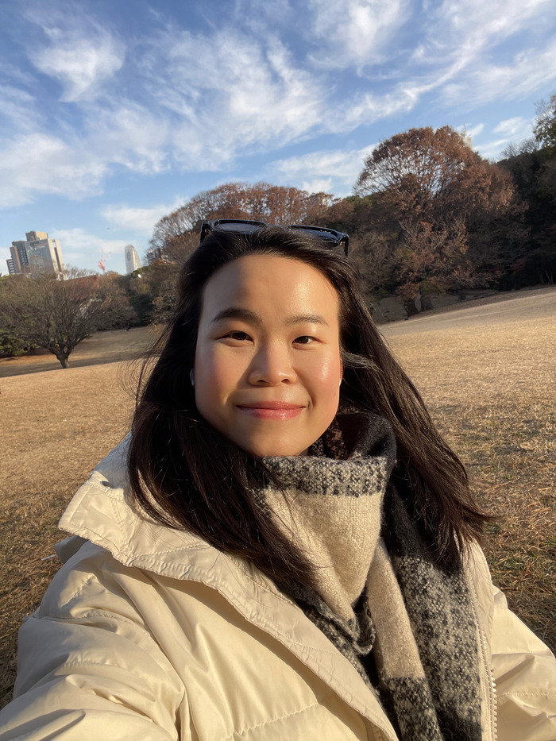

Decisions that move money, strategy, and teams. Across ~4 years in APAC fintech, OTT media and SaaS, I've built the business cases behind multi-million-dollar deals, launched regional lending products from zero, and shipped product in regulated environments, working alongside founders, CEOs and senior leaders. Now in Melbourne, adding a Master of Data Science to that operator's foundation.

I grew up in Ipoh and have been chasing interesting problems across Asia-Pacific ever since.
A risk-management degree in Hong Kong, the fast lane of Singapore's digital banks and streaming wars, and now a Master of Data Science in Melbourne. I've made a habit of dropping into a new country, culture and problem and quickly becoming useful, reading how a business actually works, earning trust across very different teams, then turning that into decisions and delivery.
What I like is the messy middle of a problem: the point where nobody's sure what the right call is, and someone has to turn scattered data into something a team can act on. Translating commercial intent into what gets built, and back again, is the thread through everything I've done.
From hometown, to study, to career, to upskilling, Ipoh to Hong Kong to Singapore to Melbourne.
The same operator across business-case work, revenue creation, and delivery. Click a card to read the full memo.
Building the models and the logic that decide where money goes, then getting the organisation to standardise on them.
Spotting the underserved gap, then actually launching the product that fills it, analysis and shipping in one person.
Shipping product in regulated, high-stakes environments, then building the systems that make delivery visible and fast.
Public repositories, decision-grade data products and AI-powered tools. github.com/mschonghuiying-hub
I built an AI twin trained on my real experience and case studies. Ask it about a project, how I'd approach a problem, or whether I'm a fit for your role. It answers from my actual background, and says so when something's outside it.
Building this is part of how I work: I ship LLM tools and help teams adopt AI. This twin is one of them.
Open to Strategy, Commercial, and Product Analyst roles in Melbourne and Singapore. Available now, one email and I'll reply quickly.